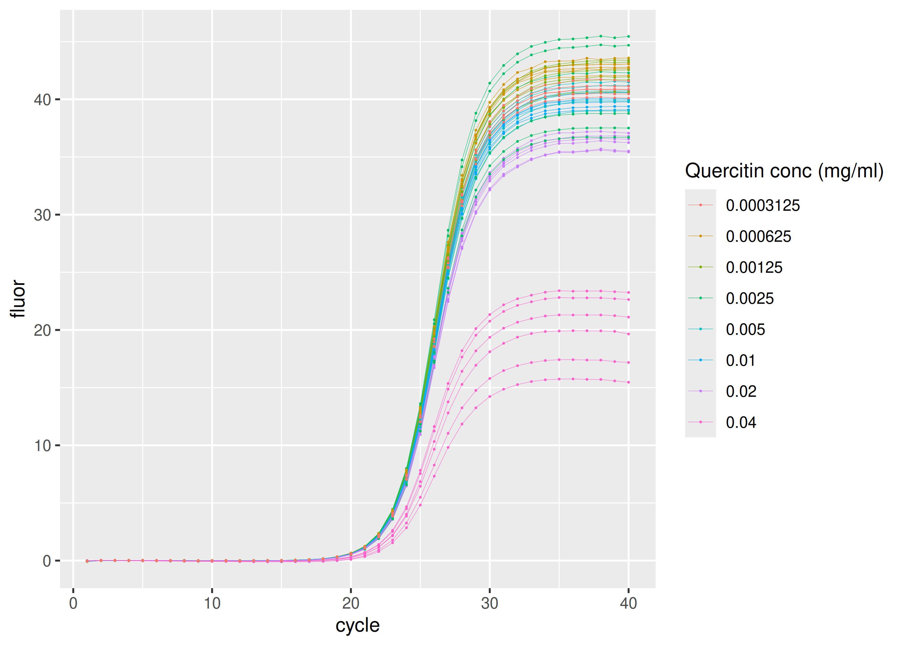
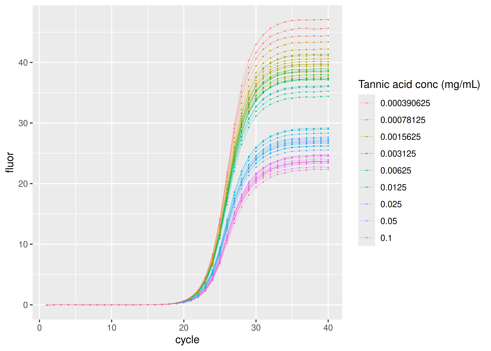
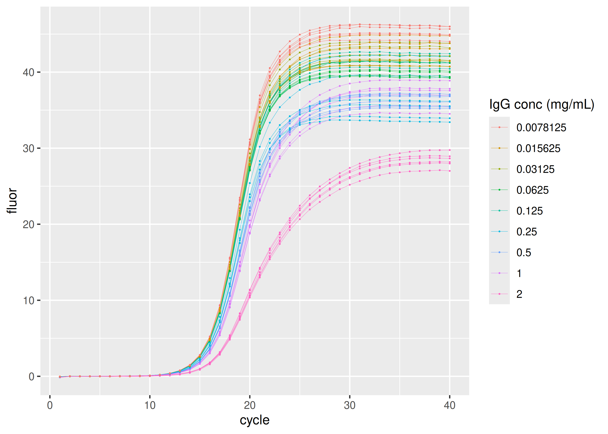
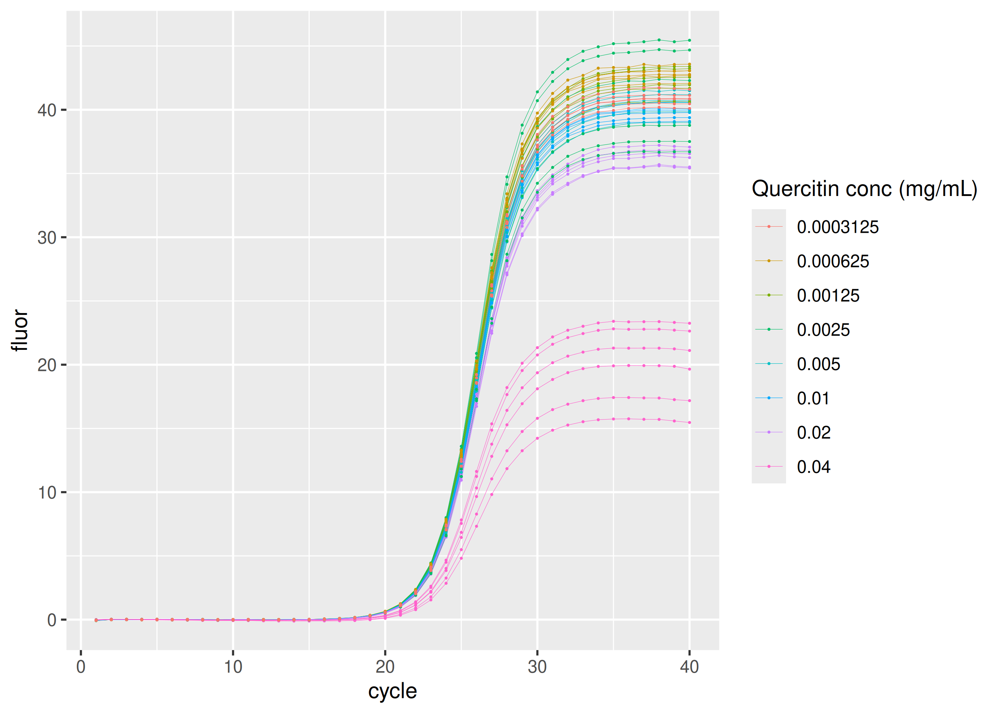

sisti provides real-time PCR data sets by Sisti et al. (2010) in tidy format as one single table (also named) sisti.
The primary dataset comprises a ten-fold dilution series spanning copy numbers from 3.14 × 107 to 3.14 × 102, with twelve replicates per concentration. These samples are based on a pGEM-T Promega plasmid containing a 104 bp fragment of the mitochondrial gene NADH dehydrogenase 1 (MT-ND1), amplified using the ND1/ND2 primer pair. The remaining three datasets contain qPCR results in the presence of specific PCR inhibitors: tannic acid, immunoglobulin G (IgG), and quercetin, respectively, to assess their effects on the amplification process.
Each original data set can be obtained by filtering sisti by plate (see below).
Installation
install.packages("sisti")Data
Each sample group is defined by the inhibitor (“none”, “tannic acid”, “IgG” or “quercitin”), respective inhibitor concentration, and initial amplicon copy number.
library(ggplot2)
library(dplyr, warn.conflicts = FALSE)
library(sisti)
sisti |>
dplyr::distinct(plate, inhibitor, inhibitor_conc, copies, dilution) |>
print(n = Inf)
#> # A tibble: 32 × 5
#> plate inhibitor inhibitor_conc copies dilution
#> <fct> <fct> <dbl> <int> <int>
#> 1 calibration none 0 31400000 1
#> 2 calibration none 0 3140000 10
#> 3 calibration none 0 314000 100
#> 4 calibration none 0 31400 1000
#> 5 calibration none 0 3140 10000
#> 6 calibration none 0 314 100000
#> 7 tannic acid tannic acid 0.1 31400 1000
#> 8 tannic acid tannic acid 0.05 31400 1000
#> 9 tannic acid tannic acid 0.025 31400 1000
#> 10 tannic acid tannic acid 0.0125 31400 1000
#> 11 tannic acid tannic acid 0.00625 31400 1000
#> 12 tannic acid tannic acid 0.00312 31400 1000
#> 13 tannic acid tannic acid 0.00156 31400 1000
#> 14 tannic acid tannic acid 0.000781 31400 1000
#> 15 tannic acid tannic acid 0.000391 31400 1000
#> 16 IgG IgG 2 3140000 10
#> 17 IgG IgG 1 3140000 10
#> 18 IgG IgG 0.5 3140000 10
#> 19 IgG IgG 0.25 3140000 10
#> 20 IgG IgG 0.125 3140000 10
#> 21 IgG IgG 0.0625 3140000 10
#> 22 IgG IgG 0.0312 3140000 10
#> 23 IgG IgG 0.0156 3140000 10
#> 24 IgG IgG 0.00781 3140000 10
#> 25 quercitin quercitin 0.04 31400 1000
#> 26 quercitin quercitin 0.02 31400 1000
#> 27 quercitin quercitin 0.01 31400 1000
#> 28 quercitin quercitin 0.005 31400 1000
#> 29 quercitin quercitin 0.0025 31400 1000
#> 30 quercitin quercitin 0.00125 31400 1000
#> 31 quercitin quercitin 0.000625 31400 1000
#> 32 quercitin quercitin 0.000312 31400 1000Here is the number of replicates per group:
sisti |>
dplyr::distinct(plate, inhibitor, inhibitor_conc, copies, dilution, replicate) |>
dplyr::count(plate, inhibitor, inhibitor_conc, copies, dilution) |>
print(n = Inf)
#> # A tibble: 32 × 6
#> plate inhibitor inhibitor_conc copies dilution n
#> <fct> <fct> <dbl> <int> <int> <int>
#> 1 calibration none 0 314 100000 12
#> 2 calibration none 0 3140 10000 12
#> 3 calibration none 0 31400 1000 12
#> 4 calibration none 0 314000 100 12
#> 5 calibration none 0 3140000 10 12
#> 6 calibration none 0 31400000 1 12
#> 7 IgG IgG 0.00781 3140000 10 6
#> 8 IgG IgG 0.0156 3140000 10 6
#> 9 IgG IgG 0.0312 3140000 10 6
#> 10 IgG IgG 0.0625 3140000 10 6
#> 11 IgG IgG 0.125 3140000 10 6
#> 12 IgG IgG 0.25 3140000 10 6
#> 13 IgG IgG 0.5 3140000 10 6
#> 14 IgG IgG 1 3140000 10 6
#> 15 IgG IgG 2 3140000 10 6
#> 16 quercitin quercitin 0.000312 31400 1000 6
#> 17 quercitin quercitin 0.000625 31400 1000 6
#> 18 quercitin quercitin 0.00125 31400 1000 6
#> 19 quercitin quercitin 0.0025 31400 1000 6
#> 20 quercitin quercitin 0.005 31400 1000 6
#> 21 quercitin quercitin 0.01 31400 1000 6
#> 22 quercitin quercitin 0.02 31400 1000 6
#> 23 quercitin quercitin 0.04 31400 1000 6
#> 24 tannic acid tannic acid 0.000391 31400 1000 6
#> 25 tannic acid tannic acid 0.000781 31400 1000 6
#> 26 tannic acid tannic acid 0.00156 31400 1000 6
#> 27 tannic acid tannic acid 0.00312 31400 1000 6
#> 28 tannic acid tannic acid 0.00625 31400 1000 6
#> 29 tannic acid tannic acid 0.0125 31400 1000 6
#> 30 tannic acid tannic acid 0.025 31400 1000 6
#> 31 tannic acid tannic acid 0.05 31400 1000 6
#> 32 tannic acid tannic acid 0.1 31400 1000 6Standard dilution series
Most concentrated set of samples in the dilution series have 3.14 × 107 copies of the NADH dehydrogenase 1 (MT-ND1) amplicon. Following samples in the series are ten-fold dilutions.
sisti |>
dplyr::filter(plate == "calibration") |>
ggplot(aes(
x = cycle,
y = fluor,
group = interaction(replicate, copies),
col = as.factor(copies)
)) +
geom_line(linewidth = 0.1) +
geom_point(size = 0.05) +
labs(color = "Copy number")
Inhibition by tannic acid
sisti |>
dplyr::filter(plate == "tannic acid") |>
ggplot(aes(
x = cycle,
y = fluor,
group = interaction(replicate, inhibitor_conc),
col = as.factor(inhibitor_conc)
)) +
geom_line(linewidth = 0.1) +
geom_point(size = 0.05) +
labs(color = "Tannic acid conc (mg/mL)")
Inhibition by immunoglobulin G (IgG)
sisti |>
dplyr::filter(plate == "IgG") |>
ggplot(aes(
x = cycle,
y = fluor,
group = interaction(replicate, inhibitor_conc),
col = as.factor(inhibitor_conc)
)) +
geom_line(linewidth = 0.1) +
geom_point(size = 0.05) +
labs(color = "IgG conc (mg/mL)")
Inhibition by quercitin
sisti |>
dplyr::filter(plate == "quercitin") |>
ggplot(aes(
x = cycle,
y = fluor,
group = interaction(replicate, inhibitor_conc),
col = as.factor(inhibitor_conc)
)) +
geom_line(linewidth = 0.1) +
geom_point(size = 0.05) +
labs(color = "Quercitin conc (mg/mL)")
Code of Conduct
Please note that the sisti project is released with a Contributor Code of Conduct. By contributing to this project, you agree to abide by its terms.
References
Davide Sisti, Michele Guescini, Marco BL Rocchi, Pasquale Tibollo, Mario D’Atri and Vilberto Stocchi. Shape based kinetic outlier detection in real-time PCR. BMC Bioinformatics 11:186 (2010). doi: 10.1186/1471-2105-11-186.